Last updated: 2020-07-19
Checks: 5 2
Knit directory: psychencode/
This reproducible R Markdown analysis was created with workflowr (version 1.6.2). The Checks tab describes the reproducibility checks that were applied when the results were created. The Past versions tab lists the development history.
The R Markdown file has unstaged changes. To know which version of the R Markdown file created these results, you’ll want to first commit it to the Git repo. If you’re still working on the analysis, you can ignore this warning. When you’re finished, you can run wflow_publish to commit the R Markdown file and build the HTML.
Great job! The global environment was empty. Objects defined in the global environment can affect the analysis in your R Markdown file in unknown ways. For reproduciblity it’s best to always run the code in an empty environment.
The command set.seed(20200622) was run prior to running the code in the R Markdown file. Setting a seed ensures that any results that rely on randomness, e.g. subsampling or permutations, are reproducible.
Great job! Recording the operating system, R version, and package versions is critical for reproducibility.
Nice! There were no cached chunks for this analysis, so you can be confident that you successfully produced the results during this run.
Using absolute paths to the files within your workflowr project makes it difficult for you and others to run your code on a different machine. Change the absolute path(s) below to the suggested relative path(s) to make your code more reproducible.
| absolute | relative |
|---|---|
| /Users/sabrinami/Github/psychencode | . |
Great! You are using Git for version control. Tracking code development and connecting the code version to the results is critical for reproducibility.
The results in this page were generated with repository version d0856a5. See the Past versions tab to see a history of the changes made to the R Markdown and HTML files.
Note that you need to be careful to ensure that all relevant files for the analysis have been committed to Git prior to generating the results (you can use wflow_publish or wflow_git_commit). workflowr only checks the R Markdown file, but you know if there are other scripts or data files that it depends on. Below is the status of the Git repository when the results were generated:
Ignored files:
Ignored: .DS_Store
Ignored: analysis/.DS_Store
Ignored: output/.DS_Store
Untracked files:
Untracked: models/
Untracked: output/test_results/
Unstaged changes:
Modified: analysis/calculate_covariances.Rmd
Modified: analysis/generate_weights.Rmd
Modified: analysis/test_scz.Rmd
Note that any generated files, e.g. HTML, png, CSS, etc., are not included in this status report because it is ok for generated content to have uncommitted changes.
These are the previous versions of the repository in which changes were made to the R Markdown (analysis/test_scz.Rmd) and HTML (docs/test_scz.html) files. If you’ve configured a remote Git repository (see ?wflow_git_remote), click on the hyperlinks in the table below to view the files as they were in that past version.
| File | Version | Author | Date | Message |
|---|---|---|---|---|
| Rmd | 1487151 | sabrina-mi | 2020-07-19 | add covariance scripts |
| html | b4b782b | sabrina-mi | 2020-07-17 | updated htmls |
| Rmd | 26fbf72 | sabrina-mi | 2020-07-17 | fixed merge issues |
| Rmd | a2d4866 | sabrina-mi | 2020-07-17 | more detailed intros |
| Rmd | a6e56ff | sabrina-mi | 2020-07-16 | for lab meeting 7/14 |
| Rmd | 5d5b66f | GitHub | 2020-07-16 | Rename test_pgc_scz.Rmd to test_scz.Rmd |
| Rmd | 651e0bf | GitHub | 2020-07-16 | Delete test_scz.Rmd |
| Rmd | cd613c1 | sabrina-mi | 2020-07-14 | don’t know whats going on with clozuk gwas, but pgc gwas works well |
| Rmd | ff64a7f | sabrina-mi | 2020-07-11 | spredixcan running normally, the results don’t make sense rip |
| Rmd | d9957ad | sabrina-mi | 2020-07-10 | GTEx model working |
| Rmd | 643fdaa | sabrina-mi | 2020-07-08 | predixcan tests |
I used a GWAS of Schizophrenia to test S-PrediXcan on the model generated from Gandal et al.’s Cross-Disorder TWAS, on http://resource.psychencode.org, on against PredictDB models trained on GTEx v7 data, subsampled to use European samples. The psychencode model db was based on elastic-net weights calculated in FUSION. Here is how they were generated: https://hakyimlab.github.io/psychencode/generate_weights.html. The covariance matrix was calulated on a 1000 Genomes reference panel here: https://hakyimlab.github.io/psychencode/calculate_covariances.html
The GWAS was performed on unrelated genotyped individuals of European ancestry, with 33,426 cases and 54,065 controls. More info on the study: https://www.cell.com/cell/pdf/S0092-8674(18)30658-5.pdf?_returnURL=https%3A%2F%2Flinkinghub.elsevier.com%2Fretrieve%2Fpii%2FS0092867418306585%3Fshowall%3Dtrue. Download the GWAS: https://www.med.unc.edu/pgc/download-results/, filter by Schizophrenia, then Schizophrenia + Bipolar Disorder. The GTEx models used elastic net, they can be downloaded by running wget https://zenodo.org/record/3572799/files/GTEx-V7_HapMap-2017-11-29.tar.gz. We compared the Whole Blood and Brain Cortex models to the psychencode model.
conda activate imlabtools
METAXCAN=/Users/sabrinami/Github/MetaXcan/software
MODEL=/Users/sabrinami/Github/psychencode/models
RESULTS=/Users/sabrinami/Github/psychencode/output/test_results
DATA=/Users/sabrinami/Desktop/psychencode_test_dataSimilarly, in R, load the libraries, then set the same definitions.
suppressPackageStartupMessages(library(tidyverse))
suppressPackageStartupMessages(library(qqman))
suppressPackageStartupMessages(library(data.table))
suppressPackageStartupMessages(library(RSQLite))
suppressPackageStartupMessages(library(UpSetR))PRE="/Users/sabrinami/Github/psychencode"
DATA="/Users/sabrinami/Desktop/psychencode_test_data"
RESULTS=glue::glue("{PRE}/output/test_results")
CODE=glue::glue("{PRE}/code")
MODEL=glue::glue("{PRE}/models")
source(glue::glue("{CODE}/load_data_functions.R"))
source(glue::glue("{CODE}/plotting_utils_functions.R"))
gencode_df = load_gencode_df()Run S-PrediXcan on SCZ GWAS with psychencode model, and repeat for GTEx Brain Cortex and Whole Blood models.
python3 $METAXCAN/SPrediXcan.py --gwas_file $DATA/SCZvsCONT.sumstats \
--model_db_path $MODEL/psychencode_model/psychencode.db \
--covariance $MODEL/psychencode_model/psychencode.txt.gz \
--or_column OR \
--pvalue_column P \
--snp_column SNP \
--non_effect_allele_column A2 \
--effect_allele_column A1 \
--throw \
--output_file $RESULTS/spredixcan/eqtl/pgc_scz/SCZvsCONT_psychencode.csvpython3 $METAXCAN/SPrediXcan.py --gwas_file $DATA/SCZvsCONT.sumstats \
--model_db_path $MODEL/GTEx-V7-en/gtex_v7_Brain_Cortex_imputed_europeans_tw_0.5_signif.db \
--covariance $MODEL/GTEx-V7-en/gtex_v7_Brain_Cortex_imputed_eur_covariances.txt.gz \
--or_column OR \
--pvalue_column P \
--snp_column SNP \
--non_effect_allele_column A2 \
--effect_allele_column A1 \
--throw \
--output_file $RESULTS/spredixcan/eqtl/pgc_scz/SCZvsCONT_Brain_Cortex.csvpython3 $METAXCAN/SPrediXcan.py --gwas_file $DATA/SCZvsCONT.sumstats \
--model_db_path $MODEL/GTEx-V7-en/gtex_v7_Whole_Blood_imputed_europeans_tw_0.5_signif.db \
--covariance $MODEL/GTEx-V7-en/gtex_v7_Whole_Blood_imputed_eur_covariances.txt.gz \
--or_column OR \
--pvalue_column P \
--snp_column SNP \
--non_effect_allele_column A2 \
--effect_allele_column A1 \
--throw \
--output_file $RESULTS/spredixcan/eqtl/pgc_scz/SCZvsCONT_Whole_Blood.csvLoad the psychencode S-PrediXcan association results, and check for significant genes.
spredixcan_association_psychencode = load_spredixcan_association(glue::glue("{RESULTS}/spredixcan/eqtl/pgc_scz/SCZvsCONT_psychencode.csv"), gencode_df)
dim(spredixcan_association_psychencode)[1] 14320 14significant_genes_psychencode <- spredixcan_association_psychencode %>% filter(pvalue < 0.05/nrow(spredixcan_association_psychencode)) %>% arrange(pvalue)spredixcan_association_Brain_Cortex = load_spredixcan_association(glue::glue("{RESULTS}/spredixcan/eqtl/pgc_scz/SCZvsCONT_Brain_Cortex.csv"), gencode_df)
dim(spredixcan_association_Brain_Cortex)[1] 4300 14significant_genes_Brain_Cortex <- spredixcan_association_Brain_Cortex %>% filter(pvalue < 0.05/nrow(spredixcan_association_Brain_Cortex)) %>% arrange(pvalue)spredixcan_association_Whole_Blood = load_spredixcan_association(glue::glue("{RESULTS}/spredixcan/eqtl/pgc_scz/SCZvsCONT_Whole_Blood.csv"), gencode_df)
dim(spredixcan_association_Whole_Blood)[1] 6256 14significant_genes_Whole_Blood <- spredixcan_association_Whole_Blood %>% filter(pvalue < 0.05/nrow(spredixcan_association_Whole_Blood)) %>% arrange(pvalue)For each of the models, we can make a histogram and Q-Q plot of the genes with their p-values, which confirm that all three find significant genes.
spredixcan_association_psychencode %>% arrange(pvalue) %>% ggplot(aes(pvalue)) + geom_histogram(bins=20) + ggtitle("Distribution of P-value (PsychENCODE)")Warning: Removed 31 rows containing non-finite values (stat_bin).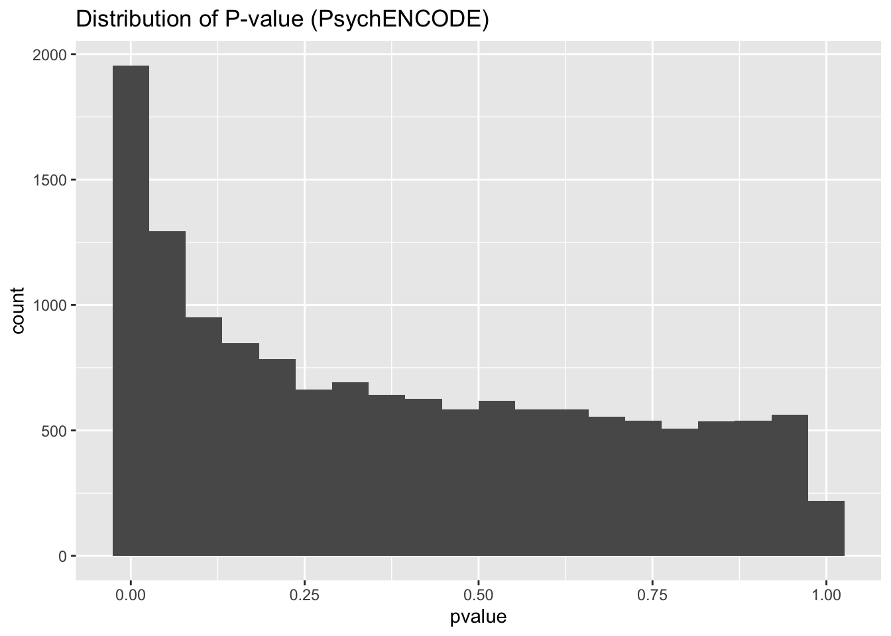
| Version | Author | Date |
|---|---|---|
| b4b782b | sabrina-mi | 2020-07-17 |
gg_qqplot(spredixcan_association_psychencode$pvalue)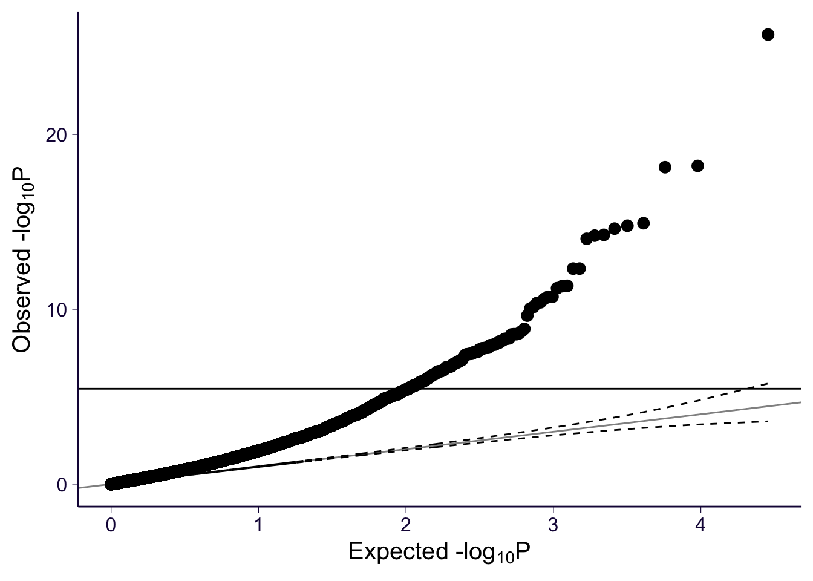
| Version | Author | Date |
|---|---|---|
| b4b782b | sabrina-mi | 2020-07-17 |
spredixcan_association_Brain_Cortex %>% arrange(pvalue) %>% ggplot(aes(pvalue)) + geom_histogram(bins=20) + ggtitle("Distribution of P-value (GTEx Brain Cortex")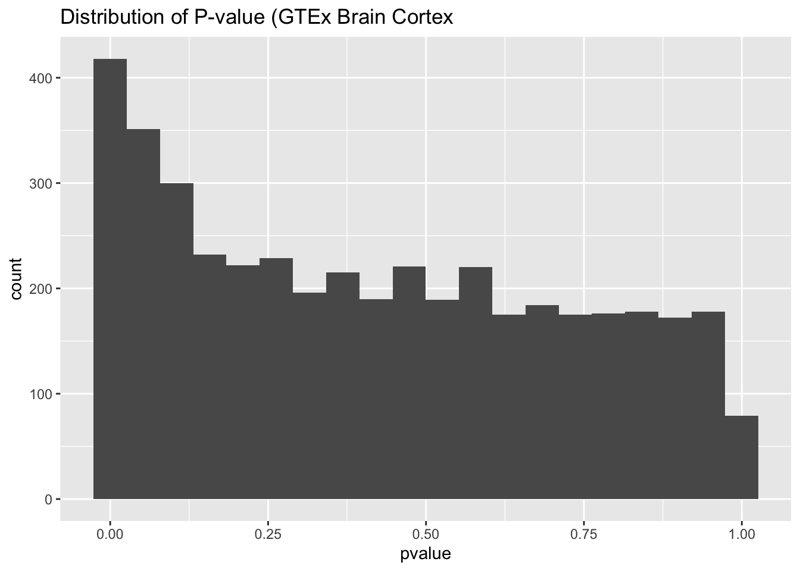
| Version | Author | Date |
|---|---|---|
| b4b782b | sabrina-mi | 2020-07-17 |
gg_qqplot(spredixcan_association_Brain_Cortex$pvalue)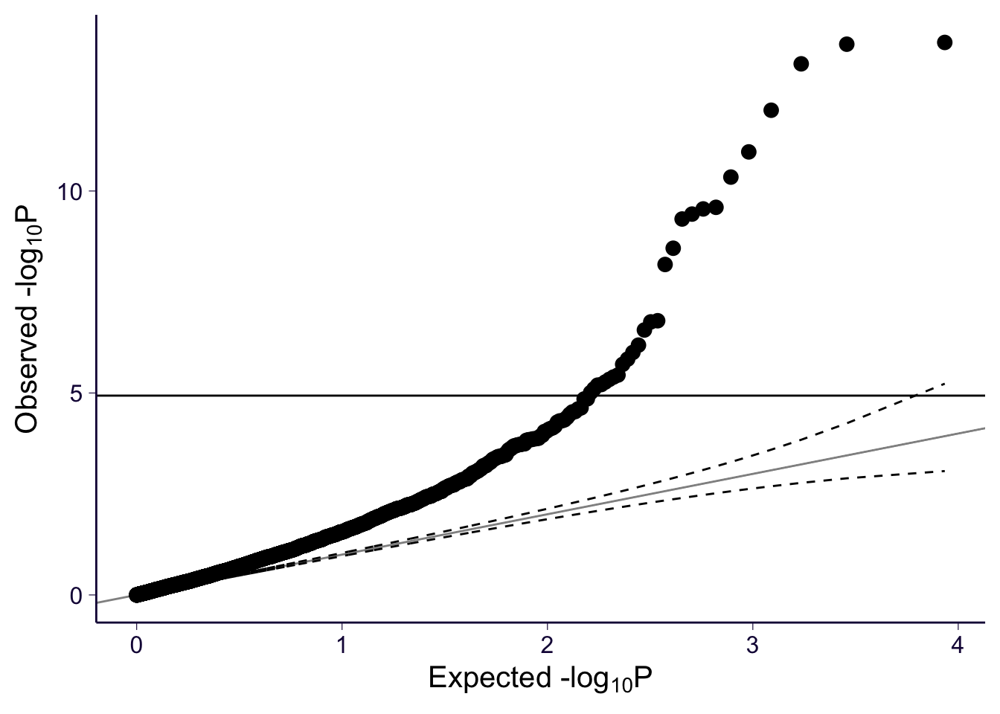
| Version | Author | Date |
|---|---|---|
| b4b782b | sabrina-mi | 2020-07-17 |
spredixcan_association_Whole_Blood %>% arrange(pvalue) %>% ggplot(aes(pvalue)) + geom_histogram(bins=20) + ggtitle("Distribution of P-value (GTEx Whole Blood")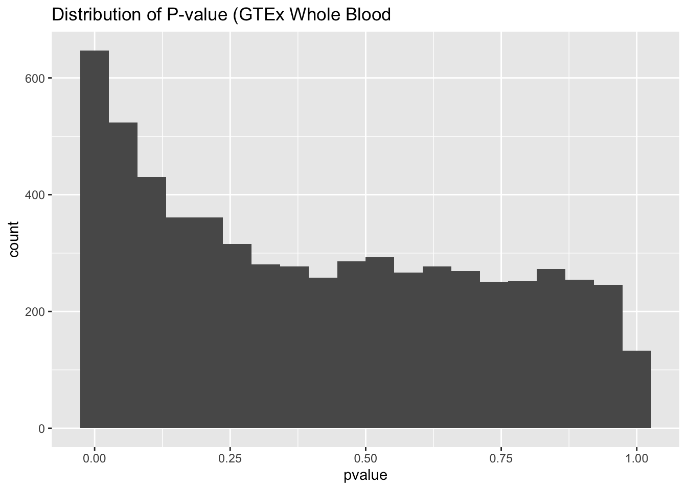
| Version | Author | Date |
|---|---|---|
| b4b782b | sabrina-mi | 2020-07-17 |
gg_qqplot(spredixcan_association_Whole_Blood$pvalue)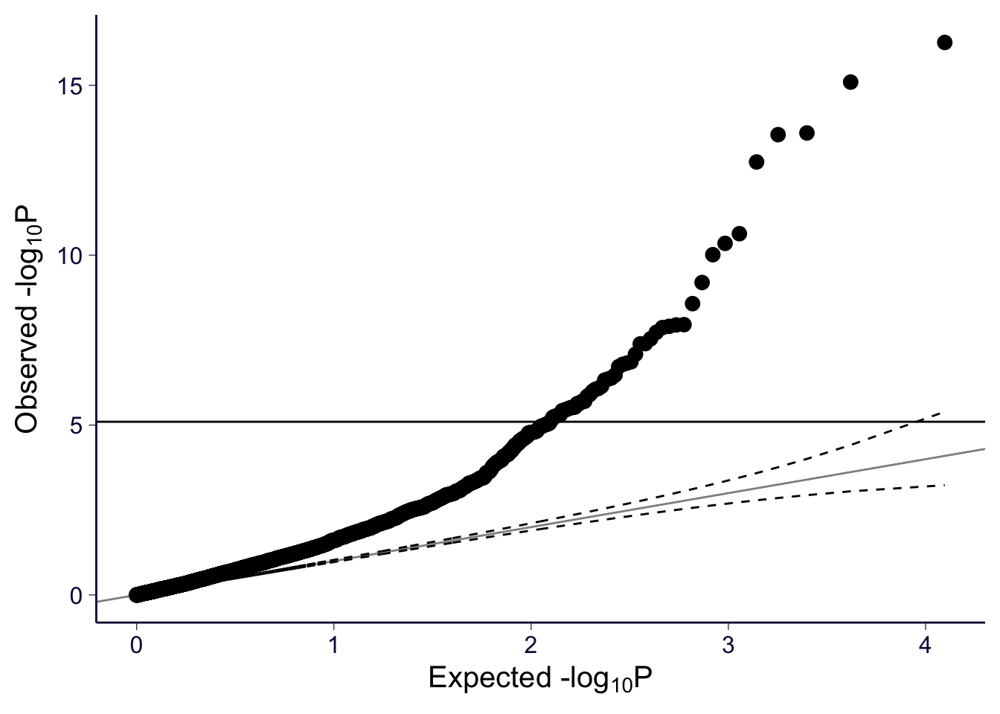
| Version | Author | Date |
|---|---|---|
| b4b782b | sabrina-mi | 2020-07-17 |
We can plot the intersection of genes found significant in each model. There is overlap between all three, which is a good sign.
significant_genes <- list(Brain_Cortex = significant_genes_Brain_Cortex$gene,
Whole_Blood = significant_genes_Whole_Blood$gene,
Psychencode = significant_genes_psychencode$gene)
upset(fromList(significant_genes), order.by = 'freq', empty.intersections = 'on')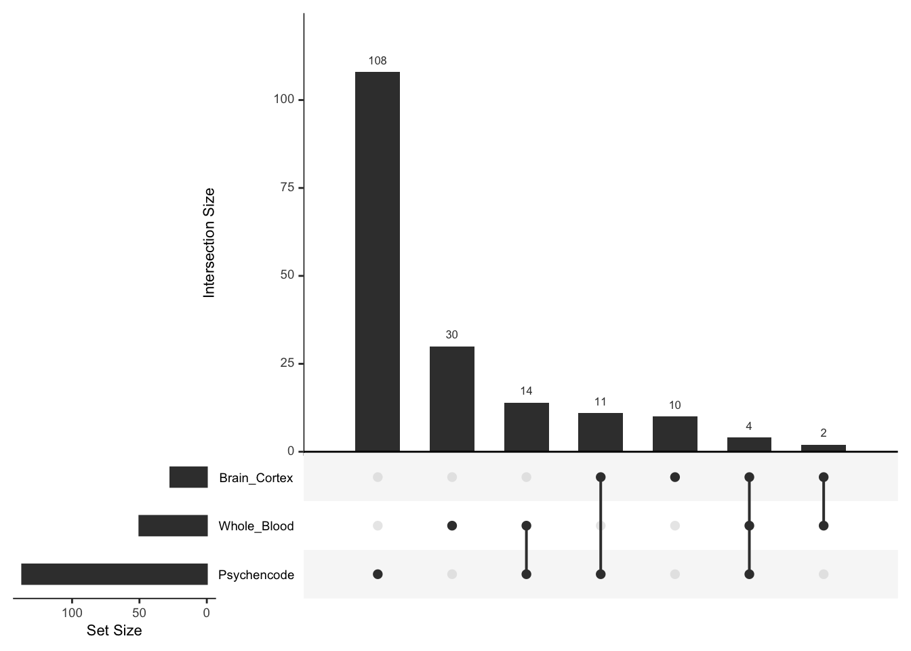
| Version | Author | Date |
|---|---|---|
| b4b782b | sabrina-mi | 2020-07-17 |
Next, we can plot the distribution of z-scores for each model:
zscore_psychencode <- data.frame("zscore" = spredixcan_association_psychencode$zscore, "model" = "psychENCODE")
zscore_Brain_Cortex <- data.frame("zscore" = spredixcan_association_Brain_Cortex$zscore, "model" = "Brain Cortex")
zscore_Whole_Blood <- data.frame("zscore" = spredixcan_association_Whole_Blood$zscore, "model" = "Whole Blood")
zscore <- rbind(zscore_Brain_Cortex, zscore_psychencode, zscore_Whole_Blood)
ggplot(zscore, aes(x=model, y= zscore)) + geom_violin() + geom_boxplot(width=.5) + ggtitle("Distribution of Association Z-score")Warning: Removed 31 rows containing non-finite values (stat_ydensity).Warning: Removed 31 rows containing non-finite values (stat_boxplot).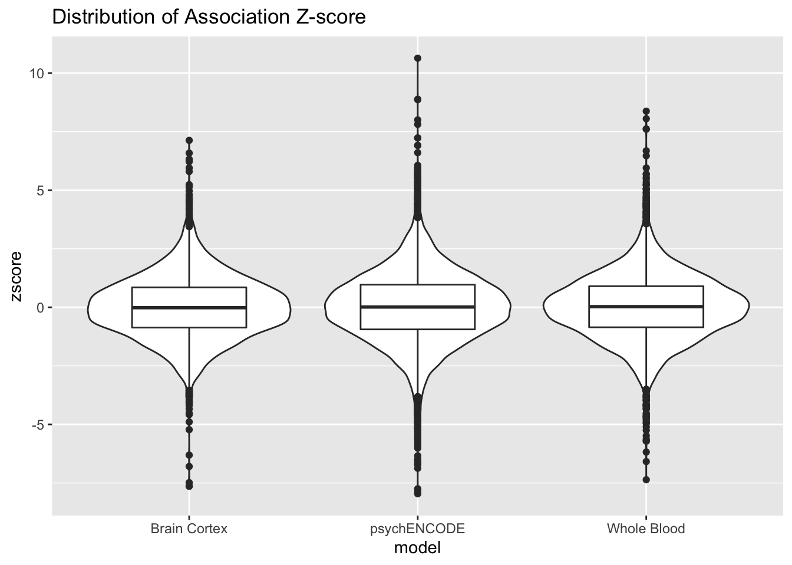
| Version | Author | Date |
|---|---|---|
| b4b782b | sabrina-mi | 2020-07-17 |
We also compare z-scores between each model. Ideally, the z-scores calculated from multiple model are similar for each gene, so they would follow the identity line. The z-scores between PsychENCODE and GTEx Brain Cortex appear more consistent than the other pairs, which could mean our model is reliable. First, plot the Brain Cortex and Psychencode z-scores:
Brain_Cortex_psychencode_zscores = inner_join(spredixcan_association_Brain_Cortex, spredixcan_association_psychencode, by=c("gene"))
dim(Brain_Cortex_psychencode_zscores)[1] 3403 27Brain_Cortex_psychencode_zscores %>% ggplot(aes(zscore.x, zscore.y)) + geom_point() + ggtitle("S-PrediXcan z-score") + xlab("GTex Brain Cortex") + ylab("PsychENCODE") + geom_abline(intercept = 0, slope = 1)Warning: Removed 6 rows containing missing values (geom_point).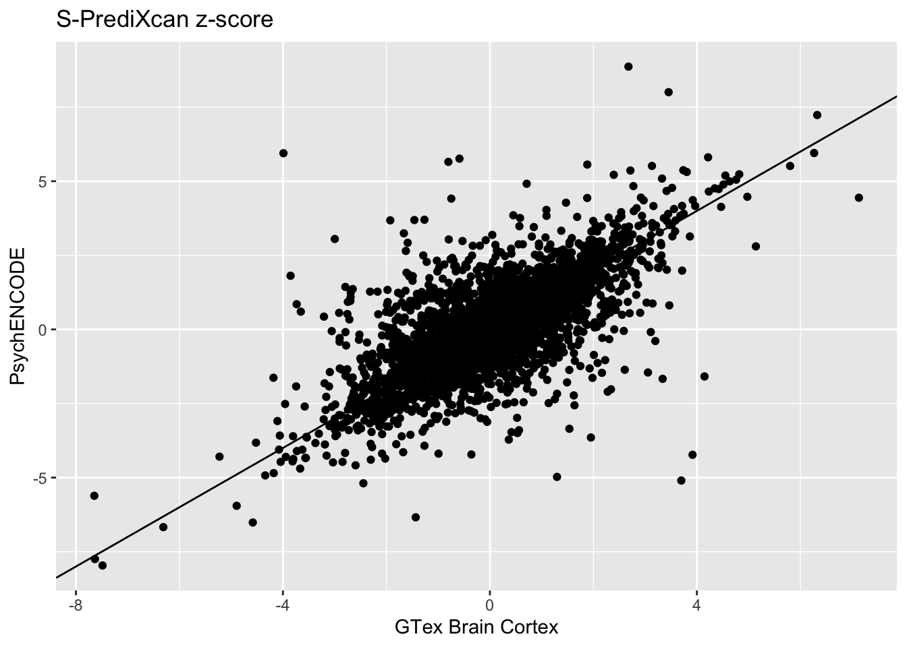
| Version | Author | Date |
|---|---|---|
| b4b782b | sabrina-mi | 2020-07-17 |
Whole Blood and Psychencode:
Whole_Blood_psychencode_zscores = inner_join(spredixcan_association_Whole_Blood, spredixcan_association_psychencode, by=c("gene"))
dim(Whole_Blood_psychencode_zscores)[1] 4319 27Whole_Blood_psychencode_zscores %>% ggplot(aes(zscore.x, zscore.y)) + geom_point() + ggtitle("S-PrediXcan z-score") + xlab("GTex Whole Blood") + ylab("PsychENCODE") + geom_abline(intercept = 0, slope = 1)Warning: Removed 12 rows containing missing values (geom_point).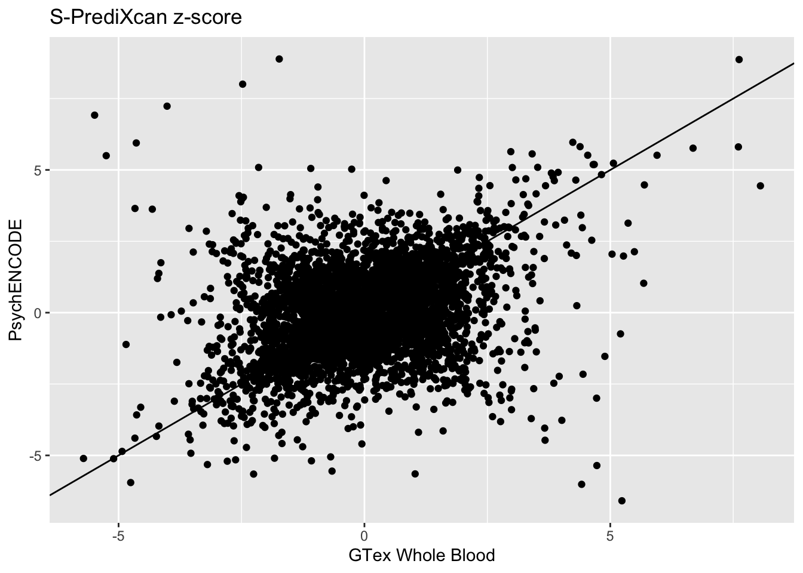
| Version | Author | Date |
|---|---|---|
| b4b782b | sabrina-mi | 2020-07-17 |
Whole Blood and Brain Cortex:
Whole_Blood_Brain_Cortex_zscores = inner_join(spredixcan_association_Whole_Blood, spredixcan_association_Brain_Cortex, by=c("gene"))
dim(Whole_Blood_Brain_Cortex_zscores)[1] 1943 27Whole_Blood_Brain_Cortex_zscores %>% ggplot(aes(zscore.x, zscore.y)) + geom_point() + ggtitle("S-PrediXcan z-score") + xlab("GTex Whole Blood") + ylab("GTEx Brain Cortex") + geom_abline(intercept = 0, slope = 1)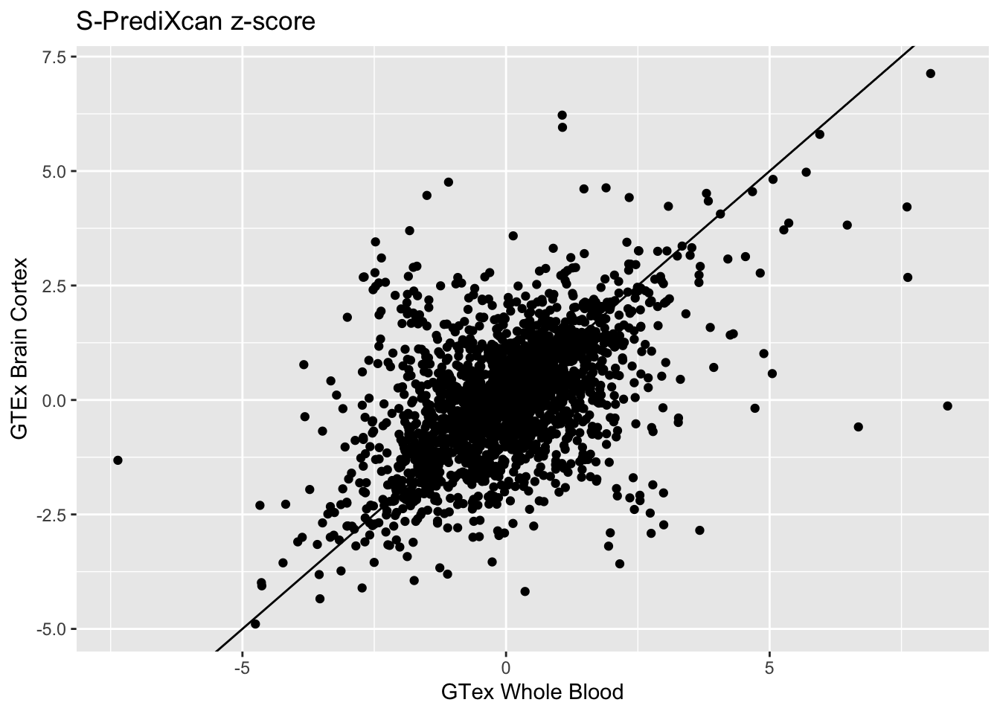
| Version | Author | Date |
|---|---|---|
| b4b782b | sabrina-mi | 2020-07-17 |
sessionInfo()R version 3.6.2 (2019-12-12)
Platform: x86_64-apple-darwin15.6.0 (64-bit)
Running under: macOS Mojave 10.14.6
Matrix products: default
BLAS: /Library/Frameworks/R.framework/Versions/3.6/Resources/lib/libRblas.0.dylib
LAPACK: /Library/Frameworks/R.framework/Versions/3.6/Resources/lib/libRlapack.dylib
locale:
[1] en_US.UTF-8/en_US.UTF-8/en_US.UTF-8/C/en_US.UTF-8/en_US.UTF-8
attached base packages:
[1] stats graphics grDevices utils datasets methods base
other attached packages:
[1] UpSetR_1.4.0 RSQLite_2.2.0 data.table_1.12.8 qqman_0.1.4
[5] forcats_0.4.0 stringr_1.4.0 dplyr_0.8.3 purrr_0.3.3
[9] readr_1.3.1 tidyr_1.0.0 tibble_2.1.3 ggplot2_3.3.0
[13] tidyverse_1.3.0
loaded via a namespace (and not attached):
[1] Rcpp_1.0.3 lubridate_1.7.4 lattice_0.20-38 assertthat_0.2.1
[5] zeallot_0.1.0 rprojroot_1.3-2 digest_0.6.23 plyr_1.8.5
[9] R6_2.4.1 cellranger_1.1.0 backports_1.1.5 reprex_0.3.0
[13] evaluate_0.14 httr_1.4.1 highr_0.8 pillar_1.4.3
[17] rlang_0.4.2 readxl_1.3.1 rstudioapi_0.10 blob_1.2.0
[21] whisker_0.4 rmarkdown_2.1 labeling_0.3 bit_1.1-15.1
[25] munsell_0.5.0 broom_0.5.3 compiler_3.6.2 httpuv_1.5.3.1
[29] modelr_0.1.5 xfun_0.12 pkgconfig_2.0.3 htmltools_0.4.0
[33] tidyselect_0.2.5 gridExtra_2.3 workflowr_1.6.2 fansi_0.4.1
[37] calibrate_1.7.7 crayon_1.3.4 dbplyr_1.4.2 withr_2.1.2
[41] later_1.0.0 MASS_7.3-51.4 grid_3.6.2 nlme_3.1-142
[45] jsonlite_1.6 gtable_0.3.0 lifecycle_0.1.0 DBI_1.1.0
[49] git2r_0.27.1 magrittr_1.5 scales_1.1.0 cli_2.0.1
[53] stringi_1.4.5 farver_2.0.3 fs_1.3.1 promises_1.1.0
[57] xml2_1.2.2 generics_0.0.2 vctrs_0.2.1 tools_3.6.2
[61] bit64_0.9-7 glue_1.3.1 hms_0.5.3 yaml_2.2.0
[65] colorspace_1.4-1 rvest_0.3.5 memoise_1.1.0 knitr_1.27
[69] haven_2.2.0